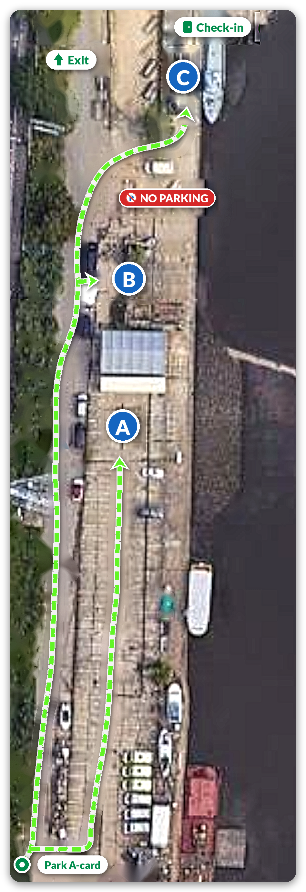

ยินดีต้อนรับสู่ ปราก
Houseboat Dock
อ่านและแบ่งปัน ก่อนเช็คอิน
ต้องการแผนที่กูเกิล!
สําคัญ: วิธีที่คุณจะมาถึงปราก, และเวลาประมาณการมาถึงที่เรือบ้าน. ตัวอย่าง: ด้วยรถ 16:30
ไม่มีรถเหรอ? คลิกที่นี่
การมาถึงและจอดรถ
ที่จอดรถฟรีต้องใช้ขั้นตอนต่อไปนี้
- ส่ง NUMBERS CAR PLATE (ตัวอย่าง ABA3235) โดยไม่มีเส้นดัก ผ่าน Airbnb chat ทําอย่างดีที่สุดในตอนนี้ นี้จะเพิ่มโอกาสของคุณในการจอดรถใกล้กับเรือบ้าน
- ดู วีดีโอนี้ กับตัวเลือกที่จอดรถ 🙂
- กดที่จอดรถ A, B หรือ C เพื่อดูตัวเลือกการจอดรถ
ที่จอดรถ A. 80 เมตรจากเรือบ้าน ใช้ช่องจอดที่ไม่มีโลโก้บริษัท
ที่จอดรถ B 60 เมตรจากเรือบ้าน ที่จอดรถชิดผนังคอนกรีต
ที่จอดรถ C (8 จุดใกล้ที่สุด) 50 เมตรจากเรือบ้าน ให้รถทั้งหมดอยู่หลังเส้นสีขาว
จากนั้นเดินไปยังเรือเรือน เดินผ่านที่จอดรถ C
สําคัญ:ที่จอดรถจํากัด 12 คัน มันอาจเป็นไปได้ว่า สถานที่ทั้งหมดจะครอบงํา และการจอดรถจะต้องทําภายนอกท่าเรือ นี่ค่อนข้างหายาก
ออกจากท่าเรือในทิศทางเดียวกัน ทางเหนือ ประตูออกจะเปิดอัตโนมัติ
สําคัญ!
เมื่อคุณมาถึง โปรดส่งรูปรถที่จอดพร้อมทะเบียนผ่าน แอร์บิน บี แชท ค่าจอดรถที่ผิด 10 ยูโร/ชั่วโมง ค่ารถลาก 250 ยูโร กรุณาหลีกเลี่ยงปัญหา
เช็คอิน
ตรวจสอบชื่อเรือบ้านและรหัสกล่องล็อค จากคู่มือการเดินทางของ Airbnb เดินไปถึง จุดนี้ ค้นหาเรือเรือนของคุณในแผนที่นี้ เปิดกล่องล็อคและเข้า ปิดกล่องล็อคและผสมตัวเลข วางกระเป๋าของคุณลง และใช้เวลาสักนาทีเพื่อตรวจสอบเรือบ้าน
รายงานความเสียหายหรือปัญหาใด ๆ ทันที
เดินไปยังท่าเรือ
ใช้ ประตูสีน้ําเงินนี้ (สถานที่ในแผนที่ Google) รหัสกล่อง 3570 เข้า วางกุญแจคืน ปิดกล่องล็อค และขัดเลข ตลอดเวลาล็อคประตู หลังจากเข้าหรือออก
อ่าน "แท็กซี่, รถไฟใต้ดิน,รถราง, รถบัส"
สนุกไปเลย
(ชิ้นที่สามคือ "เต็ม" นี่คือร่องรอยทางสั้น และคุณจะเดาได้ แม้ว่าคุณจะไม่เห็นนี่

หน้านี้แปลโดยอัตโนมัติจากคู่มือภาษาอังกฤษ หากมีข้อสงสัย ให้ยึดฉบับภาษาอังกฤษเป็นหลัก ต้นฉบับภาษาอังกฤษ